Expand all Collapse all Kilo proliferates whenever it BECOMES TAPPED, not only when it attacks. Tap it for mana, tap it to station a Spacecraft, tap it to pay for a spell, then untap it and do it again. Proliferation cannot create a first counter, so the deck seeds counters (poison on opponents, charge counters on Darksteel Reactor, +1/+1 counters on artifacts) and then multiplies them. Its finishes are repeatable loops of three or four cards, never a two-card combo, which keeps it a Bracket 3 deck. Tell the table the loops exist. The commander 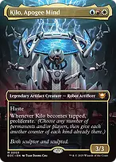Kilo, Apogee Mindthree mana, haste, and an artifact creature, so artifact untappers work on it. Every time it becomes tapped, proliferate. Tapping an already-tapped Kilo does nothing. Station taps Kilo as a cost, so stationing is a proliferate. The trigger resolves before the station adds its charge counters, so the first station on an empty Spacecraft cannot proliferate that Spacecraft yet. The loops — repeatable, never two cards +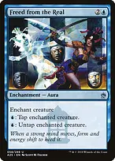+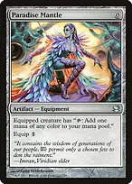Kilo, Apogee Mind + Freed from the Real + Paradise Mantlethe main engine. Equip Mantle to Kilo, tap Kilo for {U} (proliferate), spend that {U} on Freed to untap Kilo, repeat. Mana-neutral, but it proliferates as many times as you like. ++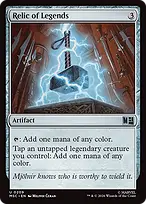Kilo, Apogee Mind + Freed from the Real + Relic of Legendsthe same loop without an equip cost. Relic's second ability taps Kilo, a legendary creature, for {U} without tapping Relic itself. +++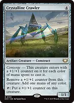Kilo, Apogee Mind + Freed from the Real + Paradise Mantle + Crystalline Crawlergive Crawler one +1/+1 counter first. Each proliferate adds another, and Crawler removes it for one mana of any colour. The loop now makes unlimited mana as well. Relic of Legends works in place of the Mantle. ++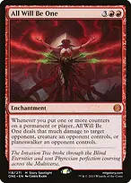Crystalline Crawler + Freed from the Real + All Will Be Onethe loop that needs no Kilo. Tap Crawler to put a +1/+1 counter on it, remove the counter for {U}, untap it with Freed. No mana or counters are gained, but every counter placed makes All Will Be One deal 1 damage. Crawler is a 1/1, so it survives with no counters. 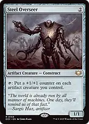++Steel Overseer + Freed from the Real + Crystalline CrawlerFreed goes on Overseer. Tap Overseer to put a counter on every artifact creature, remove Crawler's new counter for {U}, untap Overseer. Crawler breaks even while every other artifact creature grows without limit, including Walking Ballista. +++Agatha's Soul Cauldron + Crystalline Crawler + Kilo, Apogee Mind + Freed from the Realwith Crawler in your graveyard, the Cauldron exiles it and puts a +1/+1 counter on Kilo, which then has Crawler's abilities. Tap Kilo to add a counter to itself: proliferate adds another, you remove one for {U} and untap with Freed. Kilo grows by one each loop; remove the extras for mana. Keep one counter on Kilo or it loses the borrowed abilities. Crawler and Overseer have summoning sickness; Kilo does not. Do not plan on enchanting a Crawler cast this turn and looping immediately, unless Wake the Past gave it haste. Springleaf Drum is not a loop piece: Drum taps itself, so it cannot pay for the next repetition. Turning the loop into a win A loop with nothing to proliferate does nothing. Have a seed before you start, then pick the simplest payoff on the battlefield. 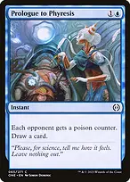Prologue to Phyresisthe cheapest finish. Each opponent gets one poison counter and you draw a card; nine more proliferations eliminate everyone. Ten poison counters is the loss threshold. 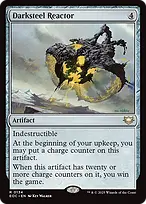Darksteel Reactorneeds one charge counter first: from its own upkeep trigger, or two at once from Inspirit at the beginning of combat. Nineteen more proliferations and you win. Walking Ballistakeep at least one +1/+1 counter on it. Each proliferation adds one, and you remove the extras to ping. Ballista put directly onto the battlefield enters with X = 0 and dies, so cast it from your hand. All Will Be Oneevery permanent or player that receives counters is a separate damage trigger. A proliferate touching six things deals six damage, so the loops kill without any other payoff. Deepglow Skatedoubles every kind of counter on any number of permanents. A Reactor at ten charge counters becomes twenty and wins with no loop at all. It cannot double poison on players, and it cannot create a first counter. 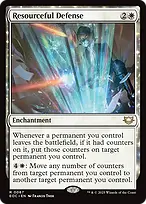Resourceful Defensewhen a permanent with counters leaves the battlefield, its counters move to another of yours. For {4}{W} it moves counters at will: charge counters from a Spacecraft onto Reactor, or +1/+1 counters onto Ballista. Counter types never change. 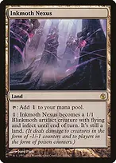Inkmoth Nexusa land that becomes a 1/1 flying infect creature for {1}. One connection seeds poison. Skrelv's Hivekept as requested. A Mite each upkeep with toxic 1, so one connection seeds poison, and the Mites are artifacts for Clock of Omens. Mites cannot block, and the life loss adds up in a long game. 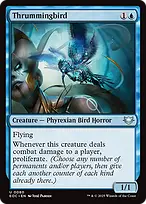Thrummingbirdkept as requested. Proliferates when it deals combat damage to a player, with or without Kilo. 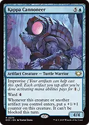Kappa Cannoneerthe combat backup when graveyard hate or enchantment removal breaks the loops. Each artifact entering grows it and makes it unblockable that turn. Tutor lines — what to fetch, and when Find whichever piece is missing. Holding Freed from the Real with Kilo out: fetch Paradise Mantle or Relic of Legends. Holding the Mantle or Relic: fetch Freed. Loop ready but nothing to grow: fetch Prologue to Phyresis, Walking Ballista, Darksteel Reactor or All Will Be One. Kilo dead or taxed out: fetch Crawler and All Will Be One. →Enlightened Tutor → Freed from the Realthe only tutor that finds an enchantment: Freed, All Will Be One or Resourceful Defense. It puts the card on top of your library, so cast it at the end of the turn before yours, or before drawing. 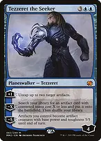→Tezzeret the Seeker → Paradise Mantle−0 puts the Mantle onto the battlefield and keeps every loyalty counter. −3 puts Relic of Legends onto the battlefield, and −2 puts out Steel Overseer. +1 untaps Kilo and a mana rock: one more proliferate and more mana. →Tezzeret, Cruel Captain → Walking Ballista−3 finds an artifact with mana value 1 or less to your hand. Walking Ballista counts as mana value 0 in your library, so it arrives in hand to cast for a real X; Paradise Mantle is the other pick. Its 0 untaps Kilo for another proliferate and gives Kilo a +1/+1 counter as a seed. →Urza's Saga → Paradise Mantlechapter III puts an artifact with mana cost {0} or {1} onto the battlefield. Mantle is the best pick, since one equip completes the loop. 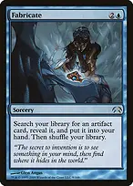→Fabricate → Crystalline Crawlerany artifact to your hand: Crawler for the mana loop, the Mantle or Relic, Darksteel Reactor, or Walking Ballista to cast for a real X. →Inventors' Fair → Darksteel Reactorwith three artifacts out, {4}, tap and sacrifice the land for any artifact to hand. It is slow, but it is a land slot. 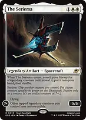→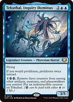The Seriema → Tekuthal, Inquiry Dominusa legendary creature to hand when it enters. Tekuthal makes every proliferate happen twice, which carries an unlooped turn twice as far. At seven charge counters The Seriema also makes your other tapped legendary creatures indestructible, Kilo included. →Sevinne's Reclamation → Freed from the Realreturns a permanent with mana value 3 or less from your graveyard to the battlefield. An Aura put back this way attaches to a creature you choose. Its flashback copy brings back a second piece, such as the Mantle or Relic. Untappers and extra proliferation These are finite. They squeeze more proliferates out of a turn when Freed from the Real is missing. Tekuthal, Inquiry Dominusif you would proliferate, proliferate twice instead. It does not double Overseer's or Skate's direct counter placements. 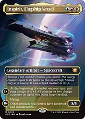Inspirit, Flagship Vesselstation it with Kilo for a proliferate. At one charge counter, each beginning of combat puts two charge counters or a +1/+1 counter on another artifact: an instant seed for Reactor. At eight it gives your OTHER artifacts hexproof and indestructible. 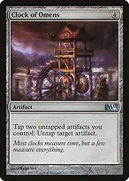Clock of Omenstap two untapped artifacts to untap Kilo. Spare rocks and Mite tokens become extra proliferates. Manifold Key{1}, tap: untap Kilo, a mana rock, or Steel Overseer. Its other ability makes an infect attacker unblockable. Voltaic Key{1}, tap: untap target artifact. The second Key. Patriar's Sealmana early, then {1}, tap: untap Kilo. 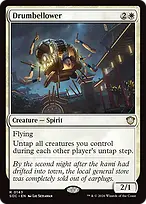Drumbelloweruntaps your creatures in each other player's untap step: off-turn Kilo activations with the Mantle or Relic. 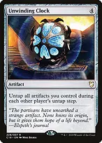Unwinding Clockthe same for all your artifacts, Kilo, keys and rocks included. Flux Channelerproliferates on every noncreature spell you cast. An artifact creature is still a creature spell and does not count. 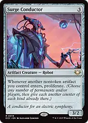Surge Conductorproliferates when another nontoken artifact enters, including artifacts returned by Emry or Wake the Past. 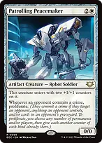Patrolling Peacemakerenters with two counters and proliferates whenever an opponent commits a crime, which means targeting an opponent or their things. Karn's Bastiona land that proliferates for {4}. Ripples of Potentialproliferate at instant speed, then phase out the permanents that got counters, which protects a seeded board from a wipe. Springleaf Drumtaps Kilo for mana, which is one proliferate. Drum taps itself too, so it is not a loop piece. Mana and cards 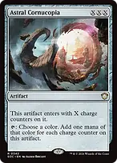Astral Cornucopiaenters with X charge counters and makes that much of one colour; every proliferate makes it bigger. Cast it for at least X = 1. 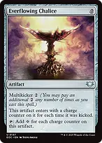Everflowing Chalicegrows with proliferation once it has a counter. Its mana is colourless and cannot pay Freed. 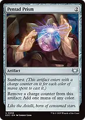Pentad Prismfixing, and each proliferate refills it. Leave one counter if it still needs to grow. Sol Ringthe usual. Mox Opalmetalcraft is easy here. Arcane Signetfixing for three colours. 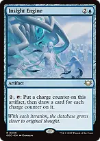Insight Engine{2}, tap: add a charge counter, then draw that many. Proliferation makes every activation larger, so stop charging it before it draws you out. 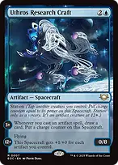Uthros Research Craftone station with Kilo reaches three charge counters, and then every artifact you cast draws a card. 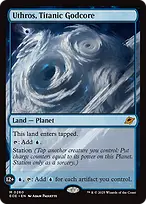Uthros, Titanic Godcorea land that, at twelve charge counters, taps for {U} per artifact you control. 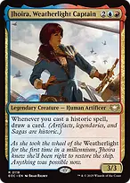Jhoira, Weatherlight Captaindraws whenever you cast an artifact or legendary spell. The draw is mandatory, so watch your library on big turns. Rhystic Studydraws without needing counters or artifacts. Mystic Remorathe early noncreature-spell tax. Esper Sentineltaxes their first noncreature spell each turn, and its tax grows with the counters Overseer gives it. 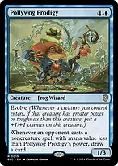Pollywog Prodigyevolve seeds a +1/+1 counter, and proliferation widens which opposing spells draw you a card. 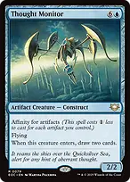Thought Monitoraffinity makes it two cards for very little in a deck this full of artifacts. 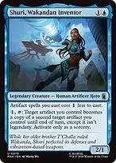Shuri, Wakandan Inventorartifacts cost one less, and it can turn one of your artifacts into a copy of another (not legendary) for the turn. Answers and protection Grand Abolisheron your turn, opponents cannot cast spells or activate abilities of artifacts, creatures or enchantments. Triggered abilities and land abilities still work. 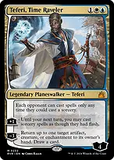Teferi, Time Raveleropponents may cast spells only at sorcery speed, which protects your loop turn from instant-speed answers. Its −3 bounces an obstacle and draws. Mana Draincounters the key spell and pays for your next big turn. Swan Songone mana against an enchantment, instant or sorcery. An Offer You Can't Refuseone mana against any noncreature spell. Deflecting Swatfree while Kilo is out. It redirects a targeted answer. Cyclonic Riftremoves a hate piece for two mana, or resets the table when overloaded. Swords to Plowsharesone mana, exile a creature. 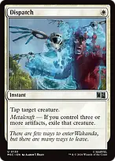Dispatchexiles a creature once you have three artifacts; below that it only taps. Generous Giftdestroys any permanent. 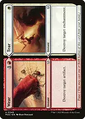Wear // Tearan artifact, an enchantment, or both. 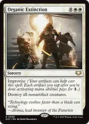Organic Extinctionimprovise pays with your artifacts, and tapping Kilo to pay is a proliferate. It destroys all nonartifact creatures, including your own Tekuthal, Drumbellower, Emry, Shuri and Grand Abolisher. Rebuilding after a wipe 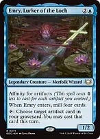Emry, Lurker of the Lochmills four, then lets you cast an artifact from your graveyard each turn. You still pay its cost, which lets you cast Walking Ballista for a real X. 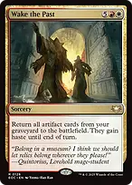Wake the Pastreturns every artifact in your graveyard to the battlefield with haste, so Crawler and Overseer loop the same turn. It does not return Freed, and Ballista comes back with no counters and dies. 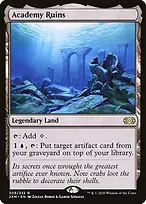Academy Ruinsputs an artifact from your graveyard on top of your library. Agatha's Soul Cauldrongraveyard hate that also grants abilities. Exiling Crawler builds the Kilo loop above. Exiling Walking Ballista gives its ping to every creature of yours with a +1/+1 counter. Exiling your own cards means Emry and Wake the Past can no longer get them back. What to keep and how to sequence it Keep three lands that make blue, red and white, plus cheap development and either a tap outlet or a draw engine. Do not keep a hand of finishers and multipliers. Seed before you multiply. Darksteel Reactor, Cornucopia and Ballista need their first counter, and poison needs Prologue, Inkmoth Nexus or a Mite to connect first. Kilo's proliferate trigger uses the stack. Opponents can respond to it and to each Freed activation unless Grand Abolisher or Teferi is out. Assemble protection before exposing the last loop piece. Freed is an Aura and dies with the creature it enchants, so keep Sevinne's Reclamation as your way back rather than casting it for value. Use the simplest payoff on the battlefield. Prologue plus the Kilo loop needs fewer pieces than making infinite mana for a Ballista, and the Crawler loop with All Will Be One wins when Kilo is gone. Choose a finite number of repetitions and announce it.